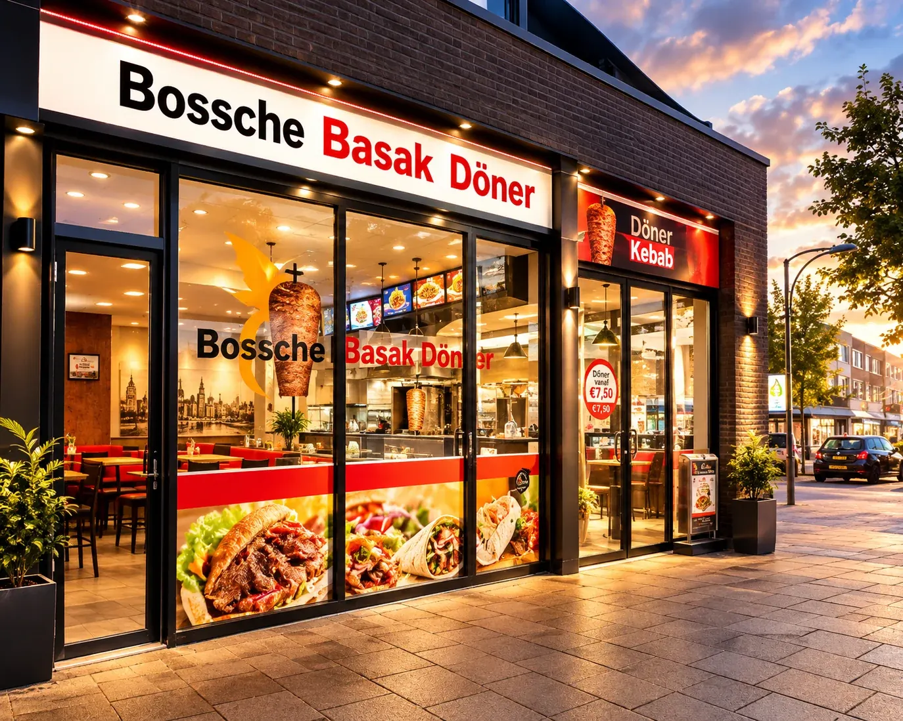

Contact
Loop binnen of stel je vraag
Wilde je eigenlijk bestellen? Dan ben je hier sneller klaar:
Hier vind je ons
5224 AP 's-Hertogenbosch
In winkelcentrum De Helftheuvel, bij de passage-ingang
Ook op feestdagen en in vakanties open

Stuur een bericht
Vragen over grote bestellingen, allergenen of iets anders? Je krijgt antwoord van de zaak zelf, meestal dezelfde dag nog.
✓ Verstuurd! We komen er zo snel mogelijk op terug, meestal dezelfde dag nog.
Veelgestelde vragen
Wat mensen ons vaak vragen
Bezorgen jullie ook?
Nee, bewust niet: döner is op zijn best vers van het spit. Je haalt je bestelling af, of je eet hem meteen op aan een van de tafeltjes in de zaak.
Kan ik zonder bestelling binnenlopen?
Altijd. Bestellen aan de balie kan de hele dag, zonder afspraak. Online bestellen is een extra: dan staat je bestelling klaar op de tijd die jij kiest.
Wanneer zijn jullie open?
Elke dag van 10.00 tot 20.00 uur, op vrijdag tot 21.00 uur. Ook op feestdagen en in vakanties.
Is het eten halal?
Ja, alles wordt volledig halal bereid.
Zijn er vegetarische opties?
Ja: het broodje falafel, de Turkse pizza met groente en de Turkse pizza met gesmolten kaas zijn vegetarisch.
Hoe kan ik betalen?
Bij het afhalen, met pin of contant. Online bestellen kost je vooraf dus niets.
Waar vind ik jullie precies?
In winkelcentrum De Helftheuvel, aan de Helftheuvelpassage 54 in 's-Hertogenbosch, bij de passage-ingang onder de overkapping.